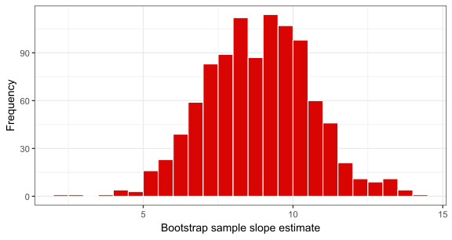

FMB819: R을 이용한 데이터분석
Regression Inference
Today’s Agenda
회귀 테이블 (regression table) 완전히 이해하기
이론 기반 (theory-based) vs. 시뮬레이션 기반 (simulation-based) 추론 비교
고전적 회귀 모델 (Classical Regression Model) 가정
실증적 응용 사례:
- 학급 크기와 학생 성취도
- 성별에 따른 교육의 수익률
학급 크기와 학생 성취도
STAR 실험 데이터를 다시 살펴보고 다음에 집중하겠음:
- 소규모 학급 (small) 과 일반 학급 (regular)
- 유치원 (Kindergarten) 학년
다음 회귀 모델을 고려하고 OLS로 추정:
\[ \text{math score}_i = b_0 + b_1 \text{small}_i + e_i\]
테네시에서 다른 무작위 표본을 선택하여 실험을 다시 수행하면, \(b_1\) 값이 다르게 나올까?
답은 Yes, 하지만 이 추정값이 얼마나 다르게 나올 가능성이 있을까?
회귀 추론: \(b_k\) vs \(\beta_k\)
\(b_0, b_1\) 는 우리가 표본에서 계산한 점 추정치 (point estimates) 임.
- 마치 파스타 예제에서 본 표본 비율 \(\hat{p}\) 과 같음!
- 사실, 모델의 예측값은…
\[\hat{y} = b_0 + b_1 x_1\]
… 알 수 없는 진짜 모집단 회귀선에 대한 추정치임.
\[y = \beta_0 + \beta_1 x_1\]
여기서 \(\beta_0, \beta_1\) 는 관심 있는 모집단 모수 (population parameters) 임.
보통 \(b_k\) 대신 \(\hat{\beta_k}\) 를 사용하기도 하며, 둘 다 \(\beta_k\) 에 대한 표본 추정치를 의미함.
이제 우리가 배운 신뢰구간 (confidence intervals), 가설검정 (hypothesis testing), 그리고 표준오차 (standard errors) 를 활용하여 \(\hat{\beta_k}\) 에 적용해 보겠음!
회귀 테이블 이해하기
- 다음은
tidy처리된 회귀 결과임:
# A tibble: 2 × 5
term estimate std.error statistic p.value
<chr> <dbl> <dbl> <dbl> <dbl>
1 (Intercept) 484. 1.15 421. 0
2 smallTRUE 8.90 1.68 5.30 0.000000123- 여기서 새로운 3개의 열이 추가됨:
std.error,statistic,p.value.
| Entry | Meaning |
|---|---|
std. error |
\(b_k\) 의 표준오차 (standard error) |
statistic |
귀무가설 \(H_0:\beta_k = 0\) vs 대립가설 \(H_A:\beta_k \neq 0\) 에 대한 검정 통계량 |
p.value |
귀무가설 \(H_0:\beta_k = 0\) vs 대립가설 \(H_A:\beta_k \neq 0\) 에 대한 p-값 |
small변수의 계수를 중심으로 각각의 항목을 이해해보자.
\(b_k\)의 표준 오차 (Standard Error)
\(b_k\)의 표준 오차 (Standard Error of \(b_k\)): \(b_k\)의 샘플링 분포의 표준 편차.
우리가 실험을 1,000번 반복하고, 1,000개의 서로 다른 표본을 사용할 수 있다고 가정하자:
그러면 1,000개의 회귀분석을 실행하고, \(\beta_k\)에 대한 1,000개의 추정치 \(b_k\)를 얻게 됨.
\(b_k\)의 표준 오차는 (무한히 많은) 표본에서 \(b_k\)가 얼마나 변동할지를 정량화함.
\(b_\textrm{small}\)의 표준 오차 (Standard Error)
회귀 테이블에서 얻은 값: \(\hat{\textrm{SE}}(b_\textrm{small}) = 1.68\)
여기서 \(\hat{\textrm{SE}}\)를 사용한 이유는, 우리가 얻은 1.68 값이 표본에서 추정된 표준 오차이기 때문임. 실제 표준 오차는 \({\textrm{SE}}\)로 표현됨.
실제 표준 오차 \({\textrm{SE}}\)를 알고 싶지만, 우리는 단 하나의 표본만 가지고 있음!
이제 \(b_\textrm{small}\)의 샘플링 분포를 시뮬레이션하여, 표준 오차가 어떻게 계산되는지 확인해 보자.
Task 1
10:00 녹색 파스타 비율의 샘플링 분포를 생성했던 것처럼, \(b_\textrm{small}\)의 부트스트랩 분포를 생성하고자 함.
학급 크기와 학생 성취도 슬라이드에서 데이터 로딩 및 정리 코드를 복사하여 실행하시오.
star_df에서 1,000개의 샘플을 추출하여 \(b_\textrm{small}\)의 부트스트랩 분포를 생성하시오. 아래 코드를 사용하면 됨:
- 이 시뮬레이션된 샘플링 분포를 시각화하고, \(b_\textrm{small}\)의 평균과 표준 오차를 계산하시오.
부트스트랩 분포
표준 오차 (Standard error): 1.76 \(\rightarrow\) 테이블의 값 (r reg_summary_star_df[2,2])과 매우 유사함!
- 하지만 정확히 일치하지 않는 이유는 R이 사용하는 이론적 접근법 대신 부트스트랩 방법을 사용했기 때문임.
회귀분석 결과 다시 확인
# A tibble: 2 × 5
term estimate std.error statistic p.value
<chr> <dbl> <dbl> <dbl> <dbl>
1 (Intercept) 484. 1.15 421. 0
2 smallTRUE 8.90 1.68 5.30 0.000000123std.error 열의 의미를 이해했음.
위에서 다음 두 개의 열은 statistic과 p.value임.
이전 수업에서 가설 검정 (hypothesis testing)에 대해 배웠음.
하지만 이 값들은 어떤 가설 검정에 해당하는 것일까?
\(\beta_k = 0\) vs \(\beta_k \neq 0\) 검정
- 기본적으로 회귀 분석 출력은 다음과 같은 가설 검정 결과를 제공함:
\[\begin{align}H_0:& \beta_k = 0\\H_A:& \beta_k \neq 0\end{align}\]
이를 통해 종속 변수(결과 변수)와 독립 변수(설명 변수) 간에 실제 관계가 있는지 통계적으로 검정할 수 있음.
만약 \(H_0\)이 참이라면, 종속 변수와 독립 변수 간에 관계가 없음.
- 이 경우 \(b_1 \neq 0\)을 관측한 것은 단순한 우연일 가능성이 있음.
만약 \(H_0\)이 거짓이라면, 두 변수 사이에 실제 관계가 있음.
중요: 이 검정은 양측 검정 (two-sided test)임!
검정 통계량과 p-값
이전 강의에서 살펴보았듯이, 가설 검정을 수행하려면 다음을 수행해야 함:
검정 통계량 (
statistic)의 표본 분포를 유도하여 귀무 가설 \(H_0\)이 참일 때의 귀무 분포를 생성함.관측된 검정 통계량이 이 가상의 세계에서 얼마나 극단적인지를 정량화함.
관측된 검정 통계량 (
statistic)은 \(\frac{b}{\hat{SE}(b)}\)로 계산됨.- 왜 단순히 \(b\)가 아니라 이 공식을 사용하는가? 나중에 이에 대해 설명할 예정.
- 표에서 얻은 검정 통계량
statistic= 5.3과 매우 유사함.: .
p-값은 귀무 분포에서 \(\pm\) 관측된 검정 통계량 바깥쪽의 면적을 측정함.
마지막으로, 일반적인 유의 수준 \(\alpha\) = 0.1, 0.05, 0.01에서 \(H_0\)을 기각할 수 있는지 확인함.
\(\beta_\textrm{small} = 0\) vs \(\beta_\textrm{small} \neq 0\) 검정
\(\frac{b_\textrm{small}}{\hat{SE}(b_\textrm{small})}\)의 귀무 분포(null distribution)를 시뮬레이션을 통해 근사화할 것임.
만약 수학 점수와 학급 크기 사이에 관계가 없다면, 즉 \(H_0\)가 참이고 \(\beta_\textrm{small} = 0\)이라면,
small값을 학생들 사이에서 재배열(reshuffling) / 순열(permuting) 하더라도 결과에 영향을 주지 않아야 함.
- 1,000개의 순열된 샘플 생성 및 \(b_\textrm{small}\) 계산
\(\beta_\textrm{small} = 0\) vs \(\beta_\textrm{small} \neq 0\) 검정
\(\beta_\textrm{small} = 0\) vs \(\beta_\textrm{small} \neq 0\) 검정
- 귀무 가설(\(H_0\))이 참일 때, \(b_\textrm{small}\) = r coeff_star[2] 값을 얻을 확률은 매우 낮음.
\(\beta_\textrm{small} = 0\) vs \(\beta_\textrm{small} \neq 0\) 검정
\(H_0\)를 기각할지 여부를 결정하기 위해, 양측 검정을 고려해야 함.
즉, 더 극단적인 값이란 -5.057보다 작거나 또는 5.057보다 큰 경우를 의미함.
\(\beta_\textrm{small} = 0\) vs \(\beta_\textrm{small} \neq 0\) 검정
- p-value는?
\(\beta_\textrm{small} = 0\) vs \(\beta_\textrm{small} \neq 0\) 검정
귀무가설 (H_0)을 기각할지 결정하려면, 양측 검정을 고려해야 함.
더 극단적인 값이란 -5.06 이하이거나 5.06 이상을 의미함.p-값을 계산하면 다음과 같음:
이 값은 회귀 분석 표에 나오는 값과 동일함.
질문: 5% 유의수준에서 귀무가설을 기각할 수 있는가?
\(\beta_\textrm{small} = 0\) vs \(\beta_\textrm{small} \neq 0\) 검정
귀무가설 (H_0)을 기각할지 결정하려면, 양측 검정을 고려해야 함.
더 극단적인 값이란 -5.06 이하이거나 5.06 이상을 의미함.p-값을 계산하면 다음과 같음:
이 값은 회귀 분석 표에 나오는 값과 동일함.
답:
p-값이 0이므로, 어떤 유의수준에서도 (H_0)를 기각할 수 있음.
p-값은 항상 ()보다 작음.다시 말해, (b_)은 어떤 유의수준에서도 0과 통계적으로 다름.
또한 (b_)이 통계적으로 유의함 (어떤 유의수준에서도) 라고 할 수 있음.
Regression Inference: Theory
회귀 추론: 이론
지금까지는 시뮬레이션 기반 추론을 설명했음.
하지만
R의 통계 패키지에서 제공하는 값들은 이론적 방법으로 얻어진 것임.이론적 추론은 대표본 근사를 기반으로 함.
- 표본 분포가 적절한 분포로 수렴함을 보일 수 있음 ⟶ 중심극한정리
이제 이론 기반 접근법을 간단히 살펴보겠음.
회귀 추론: 이론
이론 기반 접근법은 하나의 기본적인 결과를 사용함: 표본 통계량 \(\frac{b - \beta}{\hat{\textrm{SE}(b)}}\) 은 표본 크기가 커질수록 표준 정규 분포로 수렴함.
- \(\hat{\textrm{SE}(b)}\)는 \(b\)의 표준편차에 대한 표본 추정량임.
- 이 값은 이론적 공식을 통해 얻어짐 (여기서에서 확인 가능) 하지만 여기서는 다루지 않겠음.
표준 정규 분포는 평균이 0이고 표준편차가 1인 정규 분포임.
여기서는 표본 분포를 시뮬레이션할 필요가 없음. 이론적으로 유도된 분포를 사용하여 신뢰구간을 구성하거나 가설 검정을 수행할 수 있음.
만약 \(\frac{b - \beta}{\hat{\textrm{SE}(b)}}\)가 표준 정규 분포로 수렴한다면, \(b\)는 평균이 \(\beta\)이고 표준편차가 \(\hat{\textrm{SE}(b)}\)인 정규 분포로 수렴함.
정규분포(Normal Distribution)

이론 기반 추론: 신뢰구간
95% 신뢰구간을 예로 들어보겠음.
\(b\)의 표본 분포가 정규 분포를 따른다고 가정하면, 정규 분포에 대한 95% 근사 규칙을 적용할 수 있음.
정규 분포에서 95%의 값이 평균으로부터 약 2 표준편차(정확히는 1.96) 내에 존재함을 알고 있음.
따라서, \(\beta\)에 대한 95% 신뢰구간은 다음과 같이 계산할 수 있음:
\[ \textrm{CI}_{95\%} = [ b \pm 1.96*\hat{\textrm{SE}}(b)] \]
- 적절한 정규 분포의 분위수를 사용하면, 이를 쉽게 임의의 신뢰수준으로 일반화할 수 있음.
Task 2
05:00 Task 1에서 생성한 부트스트랩 분포를 사용하여 퍼센타일 방법으로 95% 신뢰구간을 계산하라.
이전 슬라이드에서 구한 신뢰구간과 얼마나 유사한가?
신뢰구간: 시각화
이론 기반 추론: 가설 검정
이론적으로, \(\frac{b - \beta_k}{\hat{\textrm{SE}(b)}}\) 는 표준 정규 분포로 수렴함.
앞서 언급했듯이, 모든 통계 소프트웨어에서 기본적으로 수행하는 검정은 다음과 같음:
\[ \begin{align} H_0:& \beta_k = 0 \\ H_A:& \beta_k \neq 0 \end{align} \]
따라서, 귀무가설 \(H_0\) 하에서 \(\beta_k=0\)이고, 이론적으로 표본 통계량 \(\frac{b}{\hat{\textrm{SE}(b)}}\) 의 분포가 표준 정규 분포를 따름.
즉, 표준 정규 분포가 검정 통계량의 귀무 분포가 됨.
해당 검정에 대한 p-값은 표준 정규 분포에서\(\pm\) 관측된 값 \(\frac{b}{\hat{\textrm{SE}(b)}}\) 바깥쪽 영역의 면적과 같음.
일반적인 기준: 추정값이 표준 오차의 두 배 이상이면 5% 유의수준에서 유의함. 왜 그런가?
회귀 분석 표 정리
- 이제 회귀 분석 표의 모든 구성 요소를 배웠으므로, 직접 생성하고 해석하는 방법을 익혀보겠음!
reg_simple_math <- lm(math ~ small, data=star_df)
reg_gender_math <- lm(math ~ small + gender , data=star_df)
reg_simple_read <- lm(read ~ small, data=star_df)
reg_gender_read <- lm(read ~ small + gender , data=star_df)
export_summs(reg_simple_math, reg_gender_math, reg_simple_read, reg_gender_read,
model.names = c("Math score", "Math Score",
"Reading score", "Reading score"),
coefs=c("Intercept" = "(Intercept)",
"Small class" = "smallTRUE",
"Male gender" = "gendermale"))회귀 분석 표 정리
| Math score | Math Score | Reading score | Reading score | |
|---|---|---|---|---|
| Intercept | 484.45 *** | 488.85 *** | 435.76 *** | 439.62 *** |
| (1.15) | (1.43) | (0.75) | (0.93) | |
| Small class | 8.90 *** | 8.94 *** | 5.37 *** | 5.41 *** |
| (1.68) | (1.67) | (1.09) | (1.09) | |
| Male gender | -8.56 *** | -7.49 *** | ||
| (1.67) | (1.09) | |||
| N | 3359 | 3359 | 3359 | 3359 |
| R2 | 0.01 | 0.02 | 0.01 | 0.02 |
| *** p < 0.001; ** p < 0.01; * p < 0.05. | ||||
회귀 분석 표 해석

각 열은 하나의 회귀 분석을 나타냄. 첫 번째 회귀 분석에서 다음을 확인할 수 있음:
- 결과 변수 이름: 파란색
- 소규모 학급에 대한 추정 계수 \(\hat{\beta_\textrm{small}}\): 초록색
- 추정된 표준 오차: 노란색
- 관측치 수: 보라색
- 결정계수 (\(R^2\)): 빨간색
- 표 하단의 별(*)에 대한 해석
Classical Regression Model
고전적 회귀 모형 (CRM)
추론이 이론을 기반으로 하든 시뮬레이션을 기반으로 하든, 유효한 추론을 위해서는 몇 가지 가정이 충족되어야 함.
이러한 가정들을 만족하는 모형을 고전적 회귀 모형 (Classical Regression Model, CRM)이라고 함.
본격적으로 가정을 살펴보기 전에, 회귀 모형에 적용하는 몇 가지 작지만 중요한 수정 사항을 확인하겠음 ([단순선형회귀 강의] 참조).
이미 표본 추정량 \(b_k\) (또는 \(\hat{\beta_k}\))와 모집단 모수 \(\beta_k\)의 차이를 언급했음.
같은 방식으로, 표본 오차 (잔차, \(e\))와 모집단 모형의 오차항 \(\varepsilon\)을 구별해야 함.
\[ y_i = \beta_0 + \beta_1 x_{1,i} + ... + \beta_k x_{k,i} + \varepsilon_i \]
고전적 회귀 모형은 올바르게 지정된 선형 회귀에 적용됨. 즉,
- 모형은 계수에 대해 선형적이어야 하며,
- 모든 관련 변수를 포함해야 하고,
- 변수들 간 다중공선성이 없어야 함.
- 모형은 계수에 대해 선형적이어야 하며,
CRM 가정
- 기대값 독립성 (Mean Independence): 오차의 조건부 평균이 0이어야 함.
\[ E[\varepsilon | x] = 0 \]
이는 또한 \[ Cov(\varepsilon, x) = 0 \] 를 의미하며, 즉 오차항과 설명변수(들)가 상관이 없어야 함.
- 이 가정을 위반하면 \(\beta_k\)의 추정값이 편향됨.
오차 기대값 독립성 Mean Independence of Error: E[u | small] = ?
오차 기대값 독립성 Mean Independence of Error: E[u | small] = ?
외생성 (Exogeneity) 가정
CRM 가정 #1은 (엄격한) 외생성 가정이라고도 불림.
이 가정이 위반되면, 추정량 \(b\)는 \(\beta\)의 편향된 추정값이 됨, 즉
\[ \mathop{\mathbb{E}}[b] \neq \beta \]예를 들어, 교육이 임금에 미치는 영향을 분석한다고 가정하자.
\[ \text{wage}_i = \beta_0 + \beta_1 \text{education}_i + \varepsilon_i \]
- 외생성 가정이 성립하면, \(\beta_1\)은 모집단에서 교육의 인과적 효과를 나타냄.
하지만 관찰되지 않은 능력 \(a_i\)가 존재한다고 가정하자.
- 높은 능력을 가진 사람은 더 높은 임금을 받을 가능성이 큼.
- 또한, 능력이 높으면 학교 생활이 더 쉬워지고, 따라서 더 많은 교육을 받게 될 가능성이 높음.
외생성 (Exogeneity) 가정
능력 \(a_i\)는 관찰되지 않기 때문에, 오차항 \(\varepsilon_i\)에 포함됨.
따라서, 기타 모든 조건이 동일하다는 가정 (ceteris paribus) 이 성립하지 않음.
그러면 임금을 교육 수준에 회귀 분석하면, 실제로는 능력 \(a_i\)가 원인이 된 임금 효과를
education의 효과로 잘못 귀속하게 됨.누락된 변수 편향 (Omitted Variable Bias, OVB) 공식:
\[ \text{OVB} = \text{다중 회귀에서 누락된 변수의 회귀 계수} \times \frac{Cov(x,z)}{Var(x)} \]
따라서, 다음을 얻음:
\[ \mathbb{E}(b_1) = \beta_1 + OVB > \beta_1 \]
해석: 모집단에서 반복적으로 표본을 추출하고 매번 \(b_1\)을 계산하면, 교육이 임금에 미치는 효과를 체계적으로 과대평가하게 됨.
CRM 가정
- 기대값 독립성 (Mean Independence): 오차의 조건부 평균이 0이어야 함.
\[ E[\varepsilon | x] = 0 \]
이는 또한 \[ Cov(\varepsilon, x) = 0 \] 를 의미하며, 즉 오차항과 설명변수(들)가 상관이 없어야 함.
- 이 가정을 위반하면 \(\beta_k\)의 추정값이 편향됨.
독립적이고 동일한 분포 (Independently and Identically Distributed, i.i.d.): 데이터는 크기 \(n\)의 랜덤 표본에서 추출됨. 각 관측치 \((x_i, y_i)\)는 동일한 분포에서 나왔으며, 모든 \(i \neq j\)에 대해 \((x_j, y_j)\)와 독립적이어야 함.
- 이 가정을 위반하면 표본이 모집단을 덜 대표하게 됨. 결과적으로 \(\beta_k\)의 추정값이 편향됨.
CRM 가정
등분산성 (Homoskedasticity): 오차항 \(\varepsilon\)의 분산이 모든 \(x\) 값에 대해 동일해야 함. \[ Var(\varepsilon|x) = \sigma^2 \]
- 이 가정이 위반되더라도 \(\beta_k\)의 추정값은 여전히 편향되지 않음. 그러나 \(\hat{\textrm{SE}}(b_k)\)의 추정값이 편향될 수 있으며, 이는 검정 통계량과 p-값에 영향을 미침.
정규성 가정 (Normally Distributed Errors): 오차항이 정규 분포를 따라야 함. \(\varepsilon \sim \mathcal{N}(0, \sigma^2)\)
- 엄격히 필수적인 것은 아니지만, 표본 크기가 작을 때도 추론이 가능하도록 도움을 줌.
👉 핵심 정리: 가정이 위반되면, 추론이 유효하지 않음!
Task 3-1
10:00 다시 교육과 성별이 임금에 미치는 효과에 대한 질문으로 돌아가 보겠음.
AER패키지에서CPS1985데이터를 로드하고, 각 변수의 정의를 확인하라:?CPS1985
wage의 로그 값을log_wage변수로 생성하라.
log_wage를gender와education에 회귀 분석하고, 결과를reg1으로 저장하라.
- 각 계수를 해석하라.
- 계수들이 통계적으로 유의한가? 어느 유의수준에서 유의한가?
log_wage를gender,education그리고gender*education의 상호작용 항과 함께 회귀 분석하고, 결과를reg2로 저장하라.
- \(female \times education\)에 해당하는 계수를 어떻게 해석할 수 있는가?
- 이 계수의 귀무가설을 5% 유의수준에서 기각할 수 있는가? 10% 유의수준에서는?
Task 3-2
10:00 - 로그 임금과 교육 수준 간의 관계를 나타내는 산점도를 생성하라.
geom_smooth를 사용하여 회귀선을 추가하라. 이 선이 무엇을 나타내는가?
- 음영 영역이 무엇을 의미하는지 설명하라.
cps데이터에서 하나의 부트스트랩 표본을 추출하라.
log_wage를gender,education, 그리고gender*education의 상호작용 항과 함께 회귀 분석하고, 결과를reg_bootstrap으로 저장하라.
reg_bootstrap에서 남성의 절편 값을intercept_men_bootstrap으로, 기울기 값을slope_men_bootstrap으로 추출하여 저장하라. 여성의 경우도 동일하게 수행하라.
- 이전 플롯에 이 부트스트랩 표본에서 예측된 두 회귀선을 추가하라 (힌트:
geom_abline을 두 번 사용하라).
불확실성 시각화
이제 동일한 절차를 100번 반복해 보겠음!
library(AER)
data("CPS1985")
cps = CPS1985 %>% mutate(log_wage = log(wage))
set.seed(1)
bootstrap_sample = cps %>%
rep_sample_n(size = nrow(cps), reps = 100, replace = TRUE)
ggplot(data=cps,aes(y = log_wage, x = education, colour = gender)) +
geom_point(size = 1, alpha = 0.7) +
geom_smooth(method = "lm", alpha = 2) +
geom_smooth(data=bootstrap_sample,
size = 0.2,
aes(y = log_wage, x = education, group = replicate),
method = "lm", se = FALSE) +
facet_wrap(~gender) +
scale_colour_manual(values = c("darkblue", "darkred")) +
labs(x = "Education", y = "Log wage") +
guides(colour=FALSE) +
theme_bw(base_size = 20)불확실성 시각화
ungeviz와 gganimate를 사용하면 움직이는 선을 만들 수 있음!
- 데이터에서 20개의 부트스트랩 표본을 추출했음.
- 각 부트스트랩 표본에 포함된 데이터 포인트가 다름을 확인할 수 있음.
- 이러한 차이는 서로 다른 회귀선을 의미함.
- 평균적으로, 이 회귀선의 95%가 음영 영역 안에 포함되어야 함.
- 음영 영역을 볼 때, 이 움직이는 선을 기억해야 함!
🔍 인과 관계를 찾아가는 길
✅ 데이터를 어떻게 다룰까?: 읽기(Read), 정리(Tidy), 시각화(Visualize)…
✅ 변수간 관계를 어떻게 요약할까? 단순 / 다중 선형 회귀…비선형회귀, 교차변수…
✅ 인과 관계(Causality)란 무엇인가?
✅ 전체 모집단을 관측하지 못하면 어떻게 할까? Sampling!
✅ 우리의 연구 결과가 단순한 무작위(Randomness) 때문일 수도 있을까? 신뢰구간과 가설검정. 통계적 추론
❌ 실제로 외생성을 어떻게 찾아낼 수 있을까?
THE END!